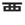

|  | west top |
| SEI |
|
In the Old West it was not considered rude to SAY things with one's mouth full of pie. |
| にし |
west
★★★★★ |
| 関西 |
western Japan
★★★★☆
western part of Japan (Osaka, Kobe, Kyoto) |
| 西口 |
west entrance
★★★★☆
KUNKUN
|
| 西側 |
west siiiiiiiiiiiiiiiiiiiiiiiiiiiide.
★★★☆☆
KUNKUN
|
|
europe and the west
欧米 西洋 西欧 |
 KANJIDAMAGE
KANJIDAMAGE